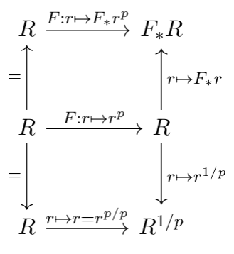
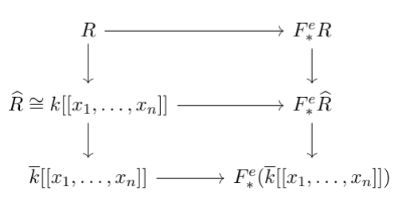

Math 918, Spring 2026: F-Singularities
Course Documents
Here are the two general references for the course.- Linquan Ma & Thomas Polstra's F-Singularities: A Commutative Algebra Approach; called [MP] in the daily update.
- Alessio Caminata & Alessandro de Stefani's Notes for course on F-singularities; called [CdS] in the daily update.
Office Hours: Mon 1:30-2:30 and Thurs 12:30-1:30. Or stop by my office when my door is open.
- Homework 1: [PDF] [TeX] + [math-hw.sty] (style file needed to complie!)
Daily Update
Use this table of contents list to jump to a specific day. Info for future classes is a tentative plan, and will be updated by the day after the class with what actually happened.
- Jan 13
- Basics & Notation: Day 1
- Jan 15
- Basics & Notation: Day 2
- Jan 20
- Completions and Proof of Kunz's theorem
- Jan 22
- Finishing proof of Kunz's theorem + starting F-splitting
- Upcoming
- Continuing thru Ch 2 of [MP] on F-splitting; Fedder's criterion (or equivalently Ch 5 of [CdS]).
Jan 13
Big Assumptions (for all semester!): p = a prime number; q = a power of p; all rings are unital, commutative, and noetherian. For a very long time (up until reduction to char p), all rings are characteristic p.
We covered the beginning of Ch 1 of [CdS], up through and including Remark 1.8. (See also very first section of [MP].) Useful fact: In a reduced (char p) ring, when p-th roots exist, they are unique!
We also concretely looked at $R^{1/p}$ and $F_*R$ in the concrete example where $R=\mathbb F_2[x]$, and saw how these are generated (as $R$-modules) by $\{1,\sqrt x\}$ and $\{1,F_*x\}$, respectively. We saw more generally that when $R= \mathbb F_p[x_1,\ldots, x_n]$, that $F_*R$ is generated by $\{F_*(x_1^{a_1}\cdots x_d^{a_d})\: | \: 0\leq a_i \lt p\}$. We even saw that this generating set is actually a basis! Finally, the following commutative diagram showed us that all three perspectives are really "the same" map. Note that all vertical maps are isomorphisms/equalities, the horizontal maps are all different ways of writing the Frobenius, and the whole bottom row only makes sense when $R$ is reduced.
Jan 15
Defined a separable polynomial and a perfect field (Ref: Section 15.5 of Eloísa's Math 818 notes). In particular, a char $p$ field is perfect if and only if $F$ is a surjection. $K=\mathbb F_p(T)$ is a non-perfect field example. We stated #5 below as a bonus problem (but originally stated it wrong! I meant to say $R^p$ not $R^{1/p}$, my apologies).
We then worked for a while on questions #1-4, and went over the answers to #1-3:
- Describe the $R$-module structure of $F_*R$ when $R=\mathbb F_p[x,y]/\langle xy\rangle$.
Generators are $\{F_*x^i, F_*y^i\: | \: 0\le i \lt p\}$. I.e., the same as for the polynomial ring, but we remove all the ones corresponding to the cross terms that are already zero in this quotient ring.
Relations are $yF_*x^i = 0$ and $xF_*y^i=0$.
- Describe the $R$-module structure of $F_*R$ when $R=\mathbb F_2[x^2,x^3]\subset \mathbb F_2[x]$.
Generators are $\{F_*1, F_*x^2, F_*x^3, F_*x^5\}$. Notice that the monomials in $R$ are every power of $x$ EXCEPT for $x$ itself. So via taking $x^aF_*x^b = F_*x^{2a+b}$ for $b\in \{0,2,3,5\}$, we see that even just $F_*x^{2a+2}$ and $F_*x^{2a+3}$ cover all possible powers $\ge 6$. The only other seemingly missing monomial is $F_*x^4$, but $F_*x^4 = x^2F_*1$.
Relations are $\begin{aligned} x^3F_*1 &= x^2 F_*x^2 & x^3F_*x^3 &= x^2F_*x^5 \\ x^4F_*1 &= x^3F_*x^2 & x^4F_*x^3 &= x^3F_*x^5\end{aligned}$.
- Describe the $R$-module structure of $F_*R$ when $R=\mathbb F_3[x,y]/\langle y^2-x^3-x\rangle$.
Generators are $\{F_*1,F_*x,F_*y\}$. Clearly the 9 monomials $\{F_*x^iy^j\: | \: 0\le i,j\lt 3\}$ would suffice as a generating set, so now we'll show that the other 6 of them are actually redundant via taking multiples of our defining equation. As we go down the list, we will only use higher up monomials to get the lower ones.
- $F_*y^2 = xF_*1 + F_*x$ (via original equation)
- $F_*xy = yF_*1 - xF_*y$ (via $\cdot y$)
- $F_*xy^2 = yF_*y - xF_*y^2$ (via $\cdot y^2$)
- $F_*x^2 = F_*xy^2 - xF_*x$ (via $\cdot x$)
- $F_*x^2y^2 = xF_*x^2 + xF_*1$ (via $\cdot x^2$)
- $F_*x^2y = yF_*x - xF_*xy$ (via $\cdot xy$)
There are no relations!
- Describe the $R$-module structure of $F_*R$ when $R=\mathbb F_p(T)[x]$.
Generators are $\{F_*(T^jx^i)\: | \: 0\le i,j\lt p\}$. No relations!
Notice that $TF_*x^i = F_*(T^px^i)$. So if we had only used the generators from the perfect field case, we would be missing being able to write an element like $F_*T$. Or said another way, previously in the perfect case we knew that if we wanted to write $F_*(ax)$, we could always pull out the $a$ via taking a $p$-th root, so that $F_*(ax) = a^{1/p}F_*x$. But if the Frobenius isn't surjective, we can't do that anymore!
- Give an example of a ring $R$ where $R^{p}$ is NOT isomorphic to $F_*R$. In other words, an example where the inclusion $R^p\hookrightarrow R$ is NOT the same map as the Frobenius. [Corrected typo from earlier statement: I wanted $R^p$ not $R^{1/p}$!]
We then noticed a pattern: drawing the corresponding varieties for the two ``free'' examples gave us affine space (the polynomial ring) and a smooth elliptic curve (#3). Drawing the two ``non-free'' examples gave us two lines crossing (#1) and a cuspidal cubic (#2).
Definition: The ring $(R,\mathfrak m, k)$ is a regular local ring if $\dim R = \dim_k \mathfrak m /\mathfrak m^2$. In other words, if the Krull dimension = the embedding dimension.
A ring $R$ is a regular ring if $R_{\mathfrak m}$ is a regular local ring for every maximal ideal $\mathfrak m$.
You will eventually learn a lot more about regular rings in Math 906.
Kunz's Theorem: $R$ is regular if and only if the Frobenius is flat.
Definition: $R$ is $F$-finite if $F_*R$ is a finitely generated $R$-module.
For a local ring and a finitely generated module $M$, you already know that $M$ is flat if and only if it is free. This and our new definition give us an immediate corollary to Kunz.
Corollary: Let $(R,\mathfrak m)$ be an $F$-finite local ring. Then $R$ is regular if and only if $F_*R$ is free.
Jan 20
Some facts (that became exercises):
-
Prove that $F$ induces an isomorphism on Spec.
The induced map on Spec takes a prime ideal $Q$ to $F^{-1}(Q)$. If $r\in Q$, then $r^p=F(r)\in Q$ and thus $r\in F^{-1}(Q)$. Conversely, if $r\in F^{-1}(Q)$ this means $r^p\in Q$, but $Q$ is prime so $r\in Q$.
- Prove that $F_*^e$ is an exact functor. (In particular, we first saw what it does to maps and to modules: just throws an $F_*^e$ decoration in front!)
See proof of Prop 1.10(1) in [CdS].
- If $W\subset R$ is a multiplicative set, then $W^{-1}(F_*^eR)\to F_*^e(W^{-1}R)$ via $\frac{F_*^e r}{w}\mapsto F_*^e(\frac{r}{w^{p^e}})$ is a $W^{-1}R$-module isomorphism.
See proof of Prop 1.10(2) in [CdS].
Definition: A sequence $(r_n)_{n\in \mathbb N}$in $R^{\mathbb N}$ is Cauchy in the $I$-adic topology if for all $t\in \mathbb N$ there exists a $d\in \mathbb N$ such that for $n,m\geq d$, we have $r_n-r_m\in I^t$. Let $C_I(R)$ be the set of Cauchy sequences. Let $C^0_I(R)$ be the sequences convernging to zero, i.e., s.t. for all $n$ there exists $m$ s.t. for all $i\geq m$, $r_i\in I^n$.
Facts/Definition: $C_I(R)$ is a ring and $C^0_I(R)$ is an ideal; the completion is $\widehat R^I = C_I/C_I^0$. We're going to only use this for local rings and the $I=\mathfrak m$ case, written just plain $\widehat R$, which satisfies:
- $\widehat R$ is a local commutative unital noetherian ring
- Completion at $\mathfrak m$ is faithfully flat
- $R$ is regular if and only if $\widehat R$ is regular.
- (Cohen Structure Theorem, equicharacteristic case) Suppose $(R,\mathfrak m,k)$ is a complete local ring containing a field. Then $R\cong k[[ x_1,\ldots, x_n]]/I$. Further, $R$ is regular if and only if $R\cong k[[x_1,\ldots, x_d]]$.
Proof of Kunz's theorem (regular implies flat):
$R$ is regular iff $R_Q$ is regular for all $Q$; and a map $\phi$ is flat iff $\phi_Q$ is flat for all $Q$. Further, $F_*^e$ commutes with localization. Thus we reduce to the local case. Now consider
Recall fact: In such a diagram (where both vertical maps are faithfully flat), if the bottom map is flat then so is the top one. So sufficient to show for the complete case, and likewise sufficient to do for a power series ring over an algebraically closed field, but we (basically) already did that! ■
We started the proof of the other direction (in the style of [CdS]) but didn't finish; however we did get through the following:
Definition: Let $(R,\mathfrak m)$ local. Then $x_1,\ldots, x_n$ is Lech independent if having $a_1x_1+\cdots + a_nx_n=0$ for $a_i\in R$ in fact implies that $a_i \in \langle x_1,\ldots, x_n\rangle$ for all $i$.
Equivalently: letting $\mathfrak q = \langle \underline x\rangle$, they are Lech independent iff they minimally generate $\mathfrak q$ and $\mathfrak q/\mathfrak q^2$ is a free $R/\mathfrak q$-module.
Lech's Lemma: Let $(R,\mathfrak m)$ be a local ring and $x_1,\ldots, x_n$ be Lech independent elements which generate an $\mathfrak m$-primary ideal. If $x_1=y_1z_1$ then \[\ell_R(R/\langle x_1,\ldots, x_n\rangle)=\ell_R(R/\langle y_1,\ldots, x_n\rangle) + \ell_R(R/\langle z_1,\ldots, x_n\rangle)\]
Proof in Lemma 2.6 of [CdS]
Jan 22
Proposition: If $\underline x\in R$ is Lech independent and $\varphi:R\to S$ is a flat map, then $\varphi(x_1),\ldots, \varphi(x_n)$ is Lech independent in $S$.
Proof: Let $I=\underline x$. Then by Lech independence, $I/I^2 \cong (R/I)^n$ as $(R/I)$ and as $R$-modules. But then flatness gives \[ (IS)/(IS)^2 \cong (S/IS)^n \] and by rank reasons clearly $\varphi(\underline x)$ is still a minimal generating set. ■
Proposition: If $\underline x$ is Lech independent and $x_1=y_1z_1$ then $y_1,\ldots, x_2,\ldots, x_n$ is L.i.
Proof: From last time, we saw that $\underline x : y_1 = \langle z_1,x_2,\ldots, x_n\rangle$. So suppose we have coefficients $a_1z_1 + \sum_{i=2}^n a_ix_i=0$. Multiply by $y_1$ to get $a_1(y_1z_1)+\sum_i (a_iy_1)x_i=0$. By Lech independence of $\underline x$, this means $a_1 \in \underline x \subset \langle z_1,x_2,\ldots, x_n\rangle$. Further, means $a_i \in \underline x:y_1 = \langle z_1,x_2,\ldots, x_n\rangle$ as desired. ■
Proof of Kunz's theorem (flat => regular): $R$ is regular if and only if $\widehat R$ is regular, and by the same diagram before, if $F_*\widehat R$ is a flat $\widehat R$ module then $F_*R$ is a flat $R$-module. (In fact, this is iff because $\widehat R\to \widehat{F_*R}$ is canonically $\widehat R\to F_* \widehat R$.) So WLOG $R$ is complete local ring, and $R\cong k[[x_1,\ldots, x_n]]/I$. Let $S=k[[x_1,\ldots, x_n]]$.
We can further WLOG assume $n =$ embedding dimension (recall that = $\dim_k\mathfrak m / \mathfrak m^2$ = by NAK the minimal number of generators of $\mathfrak m$), since if not just throw away redundant $x$'s. Thus $\underline x$ is Lech independent, and so is $\underline x^{[q]}$, and then also so is $x_1^{a_1},\ldots, x_n^{a_n}$ for combo of powers.. On the one hand, by Lech's length lemma, a base case of $\ell(R/\mathfrak m)=1$, and induction, we get that $\ell_R(R/\langle x_1^{a_1},\ldots, x_n^{a_n}) = \prod_i a_i$. But we also can do the same thing to $S$ and see that $\ell_S(S/\langle x_1^{a_1},\ldots, x_n^{a_n}) = \prod_i a_i$.
Thus $S/\langle \underline x\rangle^{[p^e]}\to S/(I+\langle \underline x\rangle^{[p^e]}\cong R/\mathfrak m^{[p^e]}$ is an isomorphism for all $t$, and so $I\subset \underline x^{[q]}$ and by Krull's intersection, $I=0$. ■
Now... new topic! Moving onto Frobenius splitting. We defined $F$-splitting, saw a proposition about how it relates to other split maps, and saw two examples.
Definition: $R$ is $F$-split if there exists some $R$-module map $\pi\in \operatorname{Hom}_R(F_*R,R)$ such that $\pi\circ F = \operatorname{id}_R$.
Equivalently: There exists an $R$-module map $\pi:F_*R\to R$ such that $\pi(F_*1)=1$.
We saw that was the same since being a splitting exactly means that for all $r\in R$ we have $r = \pi\circ F(r) = \pi(F_*r^{p})=\pi(rF_*1)=r\pi(F_*1)$.
Proposition: If $R$ is $F$-split then $R$ is reduced.
Proof: Let $\pi:F_*R\to R$ be our splitting. If $\pi\circ F=\operatorname{id}_R$, this forces the first map to be injective. And we saw $F$ injective iff $R$ reduced. ■
Example: If $R=k[x]$ or $k[[x]]$ then $R$ is $F$-split. We saw that in fact these examples are both free, with $R$-basis of $\{F_*x^i\: | \: 0\le i \lt p\}$. By freeness, we can define a map by doing whatever we want on the generators, such as the standard monomial splitting, which sends \[F_*1\mapsto 1, \qquad F_*x^i\mapsto 0\ \ \forall 0\lt i\lt p.\]
Proposition: Suppose $\varphi:R\to S$ is split (as an $R$-module map). If $S$ is $F$-split then so is $R$.
Proof: Suppose that $\varphi$ is split via $\gamma:S\to R$, and that $F_S$ is split via $\pi:F_*S\to S$. Then $\gamma\circ\pi\circ (F_*\varphi)$ is our desired splitting of $F_R$. See this via \[\gamma\circ\pi\circ (F_*\varphi)(F_*1) = \gamma\circ \pi(F_*\varphi(1)) = \gamma(\pi(F_*1))=\gamma(1)=1.\quad ■\]
Example: Let $G$ be a finite group such that $p\not|\,|G|$. Let $R$ be a char $p$ ring with a $G$ action, and let \[R^G = \{r\in R \: | \: g\cdot r = r \ \forall g\in G\] be the invariant subring. The inclusion $R^G\to R$ is always split via the Reynold's operator: \[R\to R^g\qquad r\mapsto \frac{1}{|G|}\sum_{g\in G}g\cdot r\}\] Thus whenever $R$ is $F$-split, the invariant ring $R^G$ is also $F$-split.
As a more specific example, take $G=S_3$ and $R=\mathbb F_p[x_1,x_2,x_3]$. Have $G$ act on $R$ via $\sigma\cdot f(x_1,x_2,x_3) = f(x_{\sigma(1)},x_{\sigma(2)},x_{\sigma(3)})$. Examples of polynomials in $R^G$ are $x_1x_2x_3$ and $x_1+x_2+x_3$, but NOT plain old $x_1$ or plain old $x_1x_2$. Using the previous polynomial example and the above invariant example, we see that if $p\ge 5$ then $R^{S_3}$ is $F$-split.
Today's class prompted some good requests for examples, which I will give you on Tuesday:
- What's an example of a reduced ring that is NOT $F$-split?
- What's an example of an invariant ring that is $F$-split even though $p||G|$?
Finally, an in-class exercise was to prove the following, which we will go over on Tuesday:
Proposition: The following are equivalent for a char $p$ ring $R$.
- $R$ is $F$-split.
- There exists some $e\gt 0$ such that $F^e:R\to F_*^eR$ splits.
- For all $e\gt 0$ the map $F^e:R\to F_*^eR$ splits.
Upcoming
Continuing through the second half of Ch 2 of [MP] we will cover Fedder's criterion to detect $F$-splitting. (We will return to the first half of the chapter on $F$-purity later in the semester!)